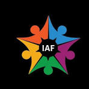
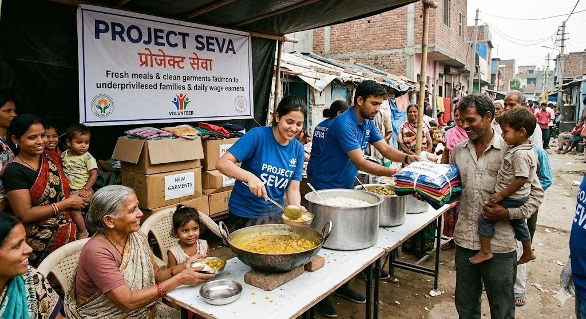
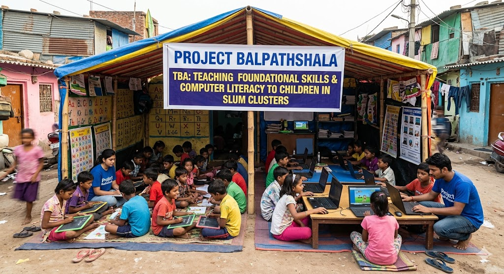
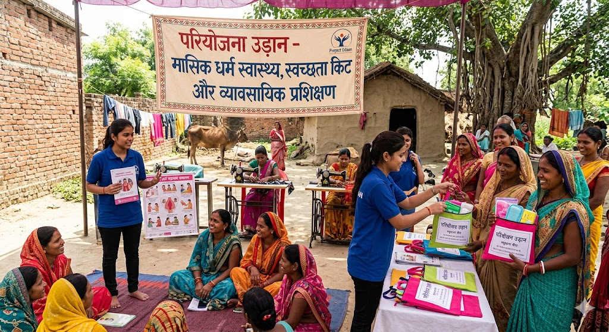
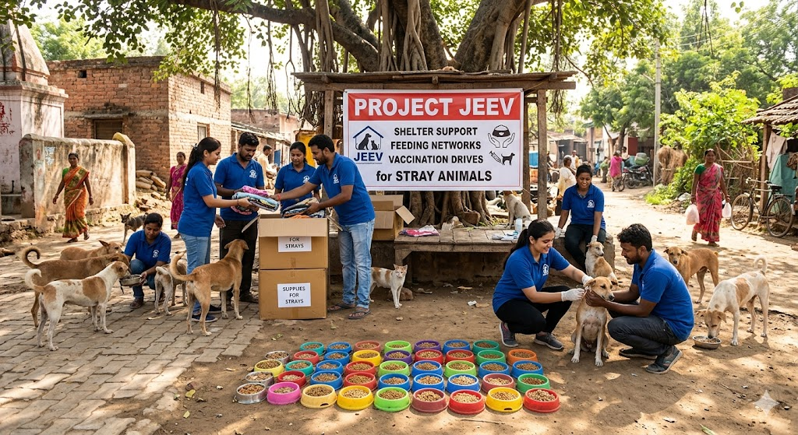
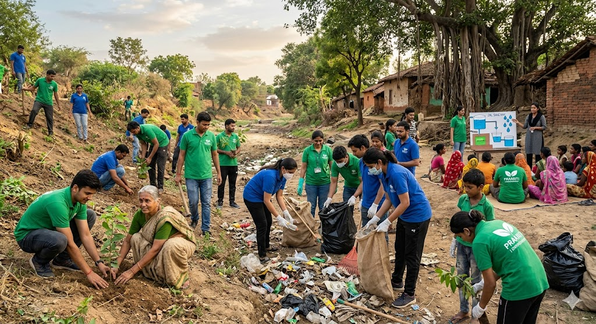
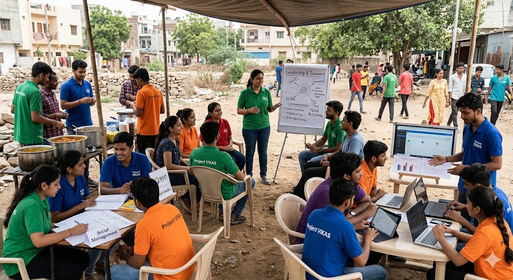

InAmigos Foundation is a youth-led non-profit driving social change across India through education, nutrition, environment, and skill development.
Meals Served
Interns Trained
Trees Planted
Cities Covered
Founded in September 2020 by Mr. Govind Shukla, InAmigos Foundation coordinates grassroots campaigns delivering humanitarian relief while fostering long-term community resilience.
We bring together passionate youngsters, local leaders, and sponsors to make social work impactful, transparent, and accessible.

Distributing fresh meals and clean garments to underprivileged families and daily wage earners.

Teaching foundational skills and computer literacy to children in slum clusters.

Menstrual health awareness, hygiene kits distribution, and vocational training for rural women.

Shelter support, feeding networks, and vaccination drives for stray animals.

Sapling plantation drives, cleanups, and water conservation workshops.

Internship programs for youth in digital marketing, leadership, and social management.